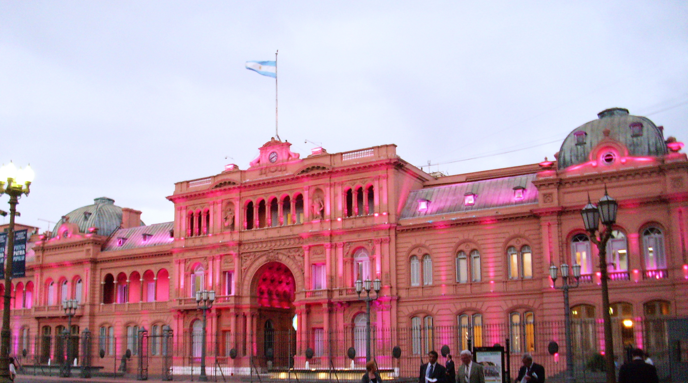

Descripción
La Casa Rosada, ubicada en Buenos Aires, es el palacio presidencial de Argentina y sede del Poder Ejecutivo. Su fachada rosada la convierte en uno de los símbolos más reconocibles del país. Ofrece visitas guiadas para conocer sus salones históricos, la famosa terraza donde el presidente se dirige al pueblo y su importante papel en la política argentina. Es un lugar clave para entender la historia contemporánea de la nación.
